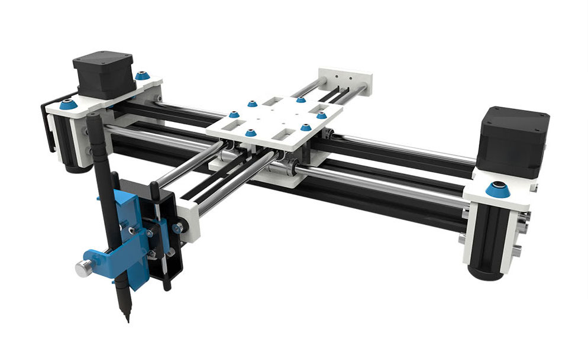
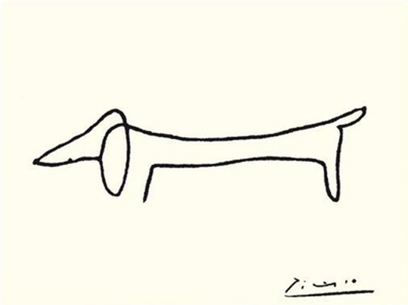
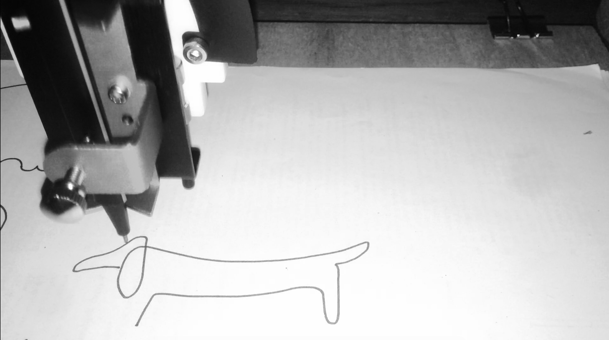
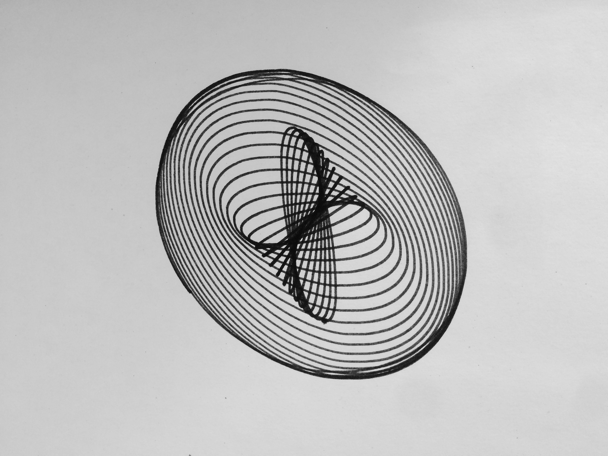

Pen plotter
Inspired by this blog post, I got interested in pen plotters and computer generated art. I liked the minimalist pieces of art a plotter could create, resembling a human hand doodling on a piece of paper. A lot of examples of this art can be found on Twitter at #plottertwitter. By far the most used plotter on Twitter is the AxiDraw, but since I didn’t want to spend over 400 euros and I liked the prospect of assembling something myself, I decided to buy the EleksDraw which was around 100 euros and came completely unassembled. In this blog post, I am summarising the steps I took to go from a box with nuts and bolts to some nice drawings on paper, hopefully inspiring you to try this out as well. Most of the code used can be found on my GitHub. Note that I wrote this code for myself, so please only use it as a reference and don’t use it without understanding what is going on.
Buying and assembling
I ordered the EleksDraw from BangGood, which means that the product came from China and took around 3 weeks to arrive. It came in more than a hundred pieces and assembling it took me a couple of hours. The instructions on the website were just clear enough; they consisted of just a series of pictures with no text.
The EleksDraw consists of an arm that is connected via a cable to two motors which together can move the arm in the x and y direction. You can mount any pen or pencil to it which is held in place by a screw.
After assembling it and hooking it up to my computer, I downloaded the EleksMaker software that can be used to convert an image to commands that this plotter can interpret. However, this software only works on Windows (I’m on a MacBook), and even after booting into Windows, it did not work as it should. Most of the menus didn’t show any text and when loading an image, I got an error that I couldn’t understand because it was in Chinese.
I decided to boot back into MacOS and create some software myself. How hard could it be, right?

Hello, World!
The MacOS terminal has a screen command that allows you to send commands to an external device. In my case, typing screen /dev/wchusbserial1420 connects with the EleksDraw and opens a terminal in which I could write commands.
The language that this plotter understands is called G-code. With this code, you can give the device the following commands:
S0 M5lifts the pen
S1000 M3lowers the pen
G01 Xa Ybmoves to position (a,b)
Note that G-code has many variants, so the above commands may not be exactly the same for other pen plotters.
Weirdly, the plotter’s (0,0) position was in the top right corner, so I had to make all the coordinates negative to get it to work properly. Could be because I somehow wired it wrong, but I could not figure it out. Anyway, writing my own software allowed me to work around this very easily!
Writing these instructions one by one, I could create all kinds of shapes consisting of straight lines. After every command I wrote, the device would either send back the message ok or an error. After this response, I could send it a new instruction. However, I wanted to automatically generate these commands and send them to the device using a script.
Plotter meets Python
Using the Python package pySerial, I was able to send commands to the plotter through just a couple of lines of code (see here):
# Open serial port
s = serial.Serial('/dev/wchusbserial1420', 115200)
# Wake up
s.write("\r\n\r\n")
time.sleep(2) # wait for grbl to initialize
s.flushInput() # flush startup text in serial input
s.write("G21\n") # units = mm
s.readline()
s.write("F5000\n") # speed = 5000 mm/min
s.readline()
s.write("S0 M5\n") # pen up
s.readline()
s.write("G01 X-10 Y-10\n") # go to (10, 10)
s.readline()
s.write("S1000 M3\n") # pen down
s.readline()
s.write("G01 X-20 Y-10\n") # go to (20, 10)
s.readline()
s.write("S0 M5\n") # pen up
s.readline()This piece of code wakes up the plotter, raises the pen, moves to (10, 10) (note I wrote -10 for reasons described above), lowers the pen, moves to (20, 10) and finally raises the pen again. Effectively, this draws a straight line from (10mm, 10mm) to (20mm, 10mm).
Since I figured I would be needing this code more, I wrapped it in a function. I decided to go object-oriented and created classes Point and Line, respectively. For now, these classes only contained draw methods, but I knew more was going to be needed.
Plotting SVGs
Back to my original idea: I wanted to be able to load an image, convert it to G-code commands and send these commands to the plotter automatically. Using SVG images as input seemed like the right choice since these are vector graphics and hence should be easy to convert to G-code. First step: writing an SVG parser.
Lines and points
What seemed most intuitive to me was converting the SVG <path> element to G-code instructions. Such an element can contain various types of lines and curves that together create a connected (closed or open) path. A path like this can be constructed by tracing an image in a tool like Inkscape or Sketch. My final goal was to be able to plot Picasso’s drawing ‘Dog’, which could be traced with a single path.

An example of the SVG path syntax can be found on w3schools.
It turned out that parsing such a path was straightforward with regular expressions. There were three things that made things slightly more complicated.
- Different instructions can have different numbers of parameters. For example, the
Mcommand (move) takes two numbers (an x and y coordinate), theZ(close path) command takes zero parameters, and some curve commands can take up to 7 parameters. - A command letter does not need to be repeated. For example,
L 10 20 10 30draws a line from the current position to(10, 20)and then another line to(10, 30)and is the same asL 10 20 L 10 30. - All commands can also be expressed with lower case letters, referring to relative instead of absolute positions. This requires a post processing step in which we keep track of the current position and add it if a relative position was supplied.
All of these issues were relatively easy to overcome, and after implementing this, I was able to parse an SVG file into a table which I could then convert to G-code. The code for this parser can be found on my GitHub.
Bézier curves
Still, I had only created code for drawing points and lines. To plot arcs, I could of course interpolate these using points, but the results were what I expected them to be: not very pretty. G-code supports circle arcs (an arc obtained by tracing part of a circle), so a better way would be to try to approximate the curves using circle arcs.
When tracing an image with a vector graphics tool like Sketch or Inkscape, the result will be a path consisting of Bézier curves. A Bézier curve is a parametric curve that can be described mathematically. I won’t go into more detail on Bézier curves; that is worth a blog post in itself. One thing that’s important to know is that there are quadratic and cubic Bézier curves. The quadratic curves are a special case of the cubic ones, so if I’m able to draw cubic Bézier curves I’m able to draw both.
It is in general not possible to convert a Bézier curve to a combination of circle arcs, but there are ways that are ‘good enough’. In particular, I implemented this approach in Python, which approximates a cubic Bézier curve with two circle arcs. I updated the classes for points and lines to include addition of points, multiplication of points with scalars, intersections of lines and so on. After these adjustments, it was relatively straightforward to write a CubicBezier class of which an instantiation could convert itself to two objects of class CircleArc.
For debugging purposes, I gave every such class a method that could draw the corresponding shape on a PyGame canvas. That way, I had a way of testing if everything worked without having to go through stacks of paper. In the end, this also allowed me to check if the thing I was going to plot looked the way it should, before actually sending it to the EleksDraw. For example, find below the code for Line.
import plotter as plt
class Line():
# a line is defined by 2 points
def __init__(self, point1, point2):
self.P1 = point1
self.P2 = point2
def intersect(self, line2):
# calculates the intersection point of the lines
# solution is based on simple algebra
a = self.P1.x - self.P2.x
b = self.P1.y - self.P2.y
u = (a*(line2.P2.y-self.P2.y) - b*(line2.P2.x-self.P2.x)) /\
(a*(line2.P2.y-line2.P1.y) - b*(line2.P2.x-line2.P1.x))
return (line2.P1.times(u)).plus(line2.P2.times(1-u))
def perpendicular_at(self, P):
U = Point(self.P2.y-self.P1.y, self.P1.x - self.P2.x)
return Line(P, P.plus(U))
def draw(self, canvas, color):
pygame.draw.line(canvas, color,
(self.P1.x, canvas.get_height()-self.P1.y),
(self.P2.x, canvas.get_height()-self.P2.y))
def plot_instructions(self):
# assumes we are at P1
return [plt.move(self.P2.x, self.P2.y)]After all this work, I was finally able to plot Picasso’s dog.

Drawing a harmonograph
Another blog post inspired me to try and plot some harmonographs. A harmonograph is a device that uses pendulums to draw trajectories on a piece of paper. The output of such a harmonograph can be described mathematically and we can simulate a random harmonograph by drawing random numbers and following a trajectory defined by sine waves. I followed the blog post mentioned above which draws 12 random numbers and plots the trajectory defined by
\[ x(t)=e^{-d_1t}\sin(tf_1+p_1)+e^{-d_2t}\sin(tf_2+p_2)\] \[y(t)=e^{-d_3t}\sin(tf_3+p_3)+e^{-d_4t}\sin(tf_4+p_4)\] where \(t\) runs from \(0\) to \(1\).
In his post, the author implemented the harmonograph in R, but since my plotter works from Python, I ported his code to Python.
import numpy as np
# draw the necessary random numbers
f1, f2, f3, f4 = np.random.randint(2, 4, size=4) + (np.random.random(size=4)-0.5) / 10
d1, d2, d3, d4 = np.random.uniform(0, 1e-02, 4)
p1, p2, p3, p4 = np.random.uniform(0, np.pi, 4)
# define the space and follow the trajectory
t = np.linspace(1, 100, num = 10**4)
xs = xt(t)
ys = yt(t)After this, I could plot the curve by defining lines between subsequent points and sending the instructions to my plotter. Using the classes and functions I defined before, this was very easy:
objs = [shapes.Point(xs[0], ys[0])] +\
[shapes.Line(
shapes.Point(xs[i], ys[i]),
shapes.Point(xs[i+1], ys[i+1])
) for i in range(len(xs)-1)]
s = wake_up_serial('/dev/tty.wchusbserial1410', 115200)
objs_to_plotter(objs, s)Note that I started with a Point because the pen needs to move to the initial position before it can start drawing. If you look carefully, you can see that the figure was built up using small line segments. Increasing the number of steps in the np.linspace command above will make the result smoother. Nevertheless, I think the result looks very nice!

Conclusion
All in all, it was a nice journey. I never considered myself an artist, but now I kind of know what it feels like to be one, even though I did not design anything by hand.
Someday, I want to learn Processing, a programming language designed specifically for creating computer generated art.